⬇ ダウンロード Windows 10 / 11最新版 ｜ ほかのファイル・更新の内容
OSWindows 10 / 11
グラフィックボード（推奨）NVIDIA GeForce RTX シリーズ（作者は RTX 4070 Ti で確認）
空き容量50GB 以上（SSD がおすすめ）
ネット最初に部品を数GB ダウンロード
⚠ AMD Radeon・内蔵 GPU・グラフィックボードの無い PC は想定外です。文字の読み取りを CPU で行うため、とても時間がかかります（一応は動きますが、実用は想定していません）。
インストールの手順（画像つき）
赤い枠を、番号の順に押していけば進めます。画面は Windows 11 の Edge です（Chrome の人は 2' を見てください）。
1上の「ダウンロード」ボタンを押す
ApexClipper-Setup.exe（Apex Clipper のインストーラー）がダウンロードされます。下の画面に出るファイル名は版によって違います（例：apex-clipper-2.0.17-setup.exe）。
2「一般的にダウンロードされていません」と出たら（Edge）
個人で作った（署名のない）アプリなので、ダウンロードや起動の時に Windows とブラウザが警告を出します。配布物は公開前に、新しい Windows で導入・起動・ウイルス対策の検査をしています。
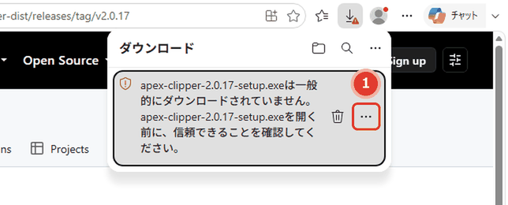
個人で作った（署名のない）アプリなので、Edge がこの表示を出します。ダウンロードの一覧の項目にマウスを載せると出る ①「…」 を押します（右クリックでも同じメニューが出ます）。
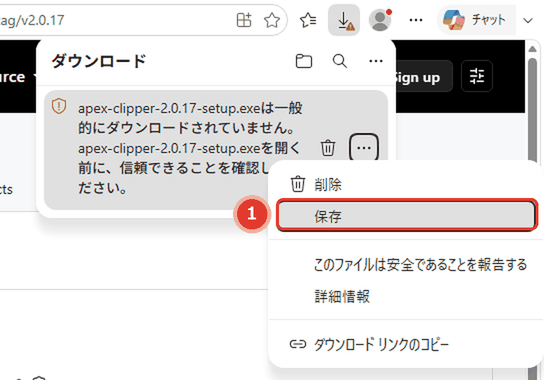
①「保存」 を押します。
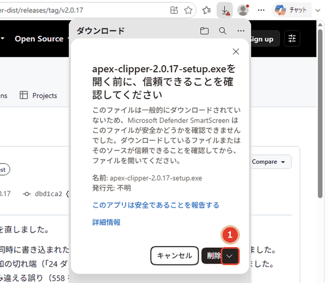
確認の窓が出ます。①「削除」の右の「∨」 を押します。「削除」の文字そのものは押さないでください（ファイルが消えます。消えたらもう一度ダウンロード）。
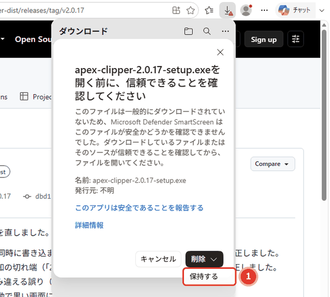
①「保持する」 を押します。
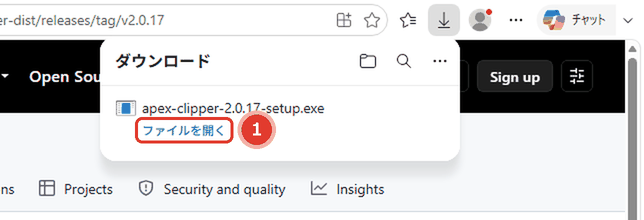
①「ファイルを開く」 を押します。
2'Chrome の場合（ダウンロードの警告は出ず、開いた時に青い画面）
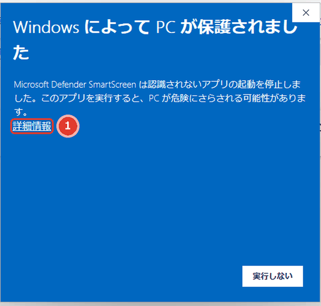
「Windows によって PC が保護されました」と出たら、①「詳細情報」 を押します（「実行しない」は押さない）。
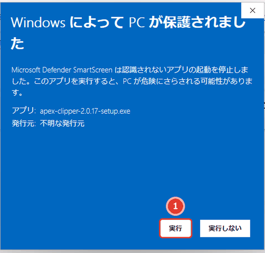
「発行元: 不明な発行元」と出ます（個人で作ったアプリのため）。①「実行」 を押すと、次の 3 に進みます。
3Windows の確認で「はい」
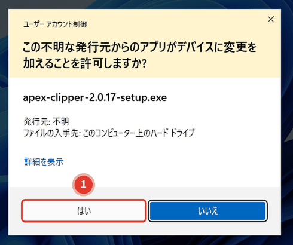
「発行元: 不明」は、個人で作ったアプリのためです。①「はい」 を押します。
4セットアップを進める
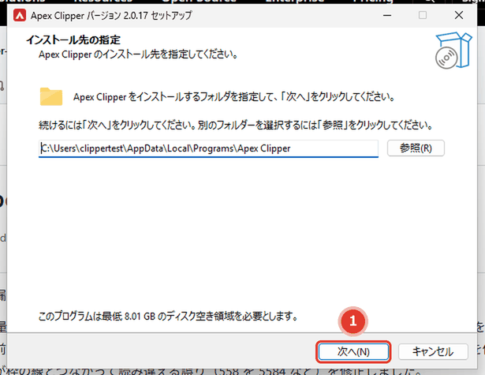
インストール先は変えなくて大丈夫です。①「次へ」 を押します。次の2ページも「次へ」です。
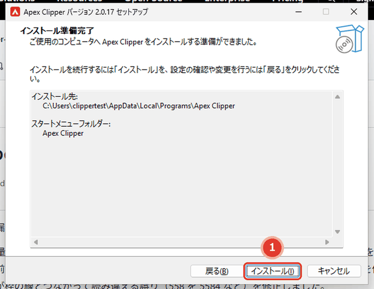
①「インストール」 を押します。
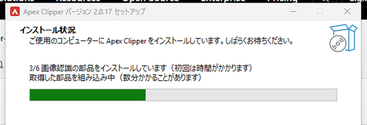
「1/6」から「6/6」まで進みます。初回は部品のダウンロードで 15〜40分 かかることがあります。途中で失敗したら、同じ setup.exe をもう一度実行するとやり直せます。
5起動する
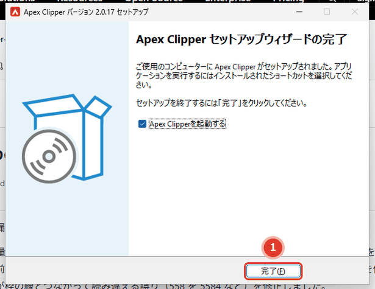
「Apex Clipperを起動する」にチェックが入ったまま ①「完了」 を押すと起動します。デスクトップに「Apex Clipper」のショートカットができます。
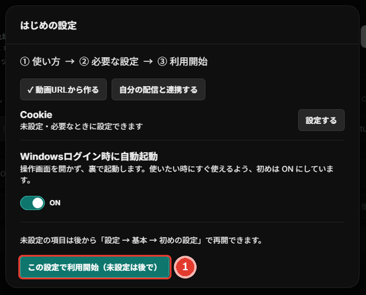
アプリの画面が出てから10〜20秒ほどで「はじめの設定」が出ます。最初は何も変えずに ①「この設定で利用開始」 で大丈夫です。使い方の案内は、アプリの右上の歯車 →「基本」→「案内を開く」にあります。
使い方
インストールの後は、アプリの右上の歯車 →「基本」→「案内を開く」で、使い方の案内を見られます。最初は YouTube の配信の URL を貼って「処理を開始」を押すだけです。